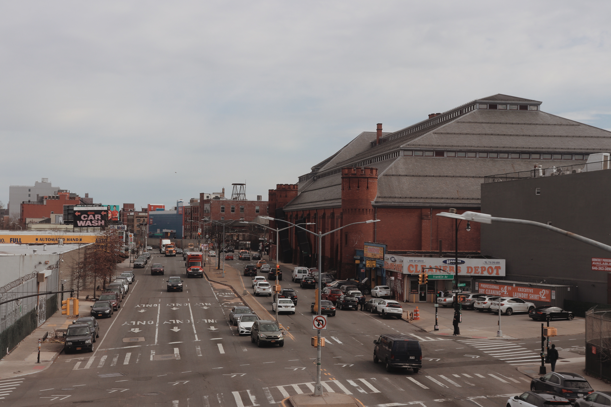

Greener Corridors examines New York City’s largest arterial thoroughfares as opportunities to create more livable, efficient, and green public spaces. These corridors are sometimes referred to as “stroads” in urban planning circles because they contain features commonly associated with streets (such as places where people live and shop) as well as roads with high-speed traffic lanes designed to quickly move large volumes of through-traffic. This street-road mix is often incompatible, and stroads are frequently criticized for being inefficient, unappealing, dangerously designed, and too focused on through-movement at the expense of walkable environments that foster a sense of place. This page is an excerpt of an article that was originally posted on The Municipal Art Society's website. Click here for the full post.

1. Introduction
Greener Corridors for a More Resilient City
Atlantic Avenue, Brooklyn, which has been dubbed "the boulevard of death" for its high number of traffic-related deaths. Photo: Kade Van Meeteren.
If you live or work in New York City, you have likely found yourself about to walk across four, six, or even eight lanes of traffic as drivers race their way through an impending red light. Or perhaps you have gazed across acres of asphalt and concrete, wondering why neither the street nor sidewalk has something beautiful, living, and leafy to cool you from the summer heat. Or maybe you avoid these roads altogether because they are simply too unsafe, inhospitable, or offer little reason to visit.
These experiences are especially present along the arterials that snake their way across all 189 residential New York City neighborhoods. These multi-lane thoroughfares are conduits for vehicle traffic, generating significant noise, heat, pollution, and safety issues for motorists and non-motorists alike. Many of these roadways are the product of historic planning policies that divided neighborhoods, displaced communities, and negatively affect residents’ health.
Northern Boulevard in Long Island City. Elected officials are working with the community on a comprehensive plan for the area, which would require rethinking the design and function of the road. Photo: Kade Van Meeteren.
From the local to the federal level, there is growing attention to the impact these corridors have on people and neighborhoods. There is also an urgent need to rethink them in the face of climate change, a housing shortage, and other twenty-first century crises that demand more from these thoroughfares. In New York, government leaders, community organizers, and others are pressing ahead with plans to improve freight movement, extend greenways, and grow the urban forest. They are dismantling highways, piloting new approaches to curb management, and passing climate laws to reduce the number of miles that vehicles must travel through communities. Nevertheless, progress has been uneven, plans are often criticized for being insufficiently imaginative or coordinated, and efforts frequently focus on limited geographies and siloed issues rather than a comprehensive approach to this system of spaces.
In light of this opportune moment and the need for creative, integrated, and long-term solutions, MAS’s latest initiative, Greener Corridors for a More Resilient City (“Greener Corridors“), makes the case that New York City’s thousands of miles of arterial roadways—and the land around them—are an unrealized opportunity for the City to accomplish its biggest policy goals, including equitably mitigating the effects of climate change, improving public safety, and stimulating housing production.
A Complex Network
New York City’s street system is incredibly complex, and transportation planners define streets differently depending on their service function or strategic policy goals. For State and Federal funding purposes, however, the city’s streets are categorized according to the Functional Classification System, a national street typology standard created in 1973 to determine infrastructure needs. Under this system, the largest and most trafficked thoroughfares are known as arterials. Intended to accommodate high automobile through-traffic volumes entering, leaving, and bypassing urban areas, arterials include interstate highways, freeways, and expressways (“controlled access” roads), as well as major roads that are largely at-grade and accessible from intersecting streets and adjacent properties.
The breakdown of streets according to the Federal Functional Street Classification System for Urban Areas. Greener Corridors considers the entire street network as an opportunity, but focuses primarily on New York City's largest principal arterials that are not interstate highways, freeways, or expressways. Photo: Google Earth, Imagery Date: 6/19/2022.
Greener Corridors places special focus on large vehicular arterials like Atlantic Avenue whose function and traffic levels are between highways and local streets. These expansive roadways tend to have four 10-foot-wide vehicle travel lanes along with two parking lanes, but some—such as Ocean Parkway and Queens Boulevard—have as many as eight travel lanes. Taken together, they also feature every combination of bus and bike lanes, medians, and underground and elevated subway infrastructure. These large arterials are sometimes referred to as “stroads” in urban planning circles. Coined by the American civil engineer and urban planner Charles Marohn, stroads are a mix of urban streets, where people live and shop, and roads, which are designed to move large volumes of through-traffic as fast as possible. Stroad critics argue that this street-road mix is incompatible, inefficient, ugly, dangerous, and too focused on through-movement rather than placemaking. Additionally, many stroads are built to highway standards with numerous wide lanes, which make them expensive to maintain.
While all thoroughfares have the potential to be greener and more sustainable, Greener Corridors argues that stroads are a transformational opportunity for several reasons. First, they have an outsized impact on neighborhoods but have arguably not benefited from the innovative ideas and level of public discourse around highways (such as the Brooklyn-Queens Expressway (BQE) and the Cross Bronx Expressway). Second, at a time when cities, states, and the federal government are admirably spending billions of dollars to dismantle elevated highways and expressways through programs such as the U.S. Department of Transportation’s Reconnecting Communities Pilot, the wide, at-grade nature of stroads allows for great physical possibility and relatively feasible solutions to reconnect communities divided by this infrastructure. Third, most of these spaces are fully within the City’s control, with little to no jurisdictional overlap and coordination required with New York State or the federal government. Fourth, stroads are the spine of many neighborhood street networks and have the potential to set a precedent for a much larger system of streets within and across communities.
A Scarring Legacy
In New York City, many of the roads that are classified as arterials are tied to federal aid acts (especially the Federal-Aid Highway Act of 1956) of the early to mid-twentieth century that enabled the construction of a national road and interstate highway network. New York’s infamous “master builder,” Robert Moses, helped drive the creation of these policies that expanded the automobile focus of existing roadways and allowed entirely new highway and urban renewal projects to be constructed through the heart of New York City neighborhoods. His approach to roadway building was replicated in cities across the country.
The purpose of many of these roadways was to connect New York’s growing suburbs to urban job centers. In the process, arterial projects and auto-centric land uses displaced hundreds of thousands of low-income residents between the 1920s and 1960s. In his project Segregation by Design, architectural designer Adam Paul Susaneck details the effects of numerous arterial projects across New York City. Regarding the impacts of the Cross Bronx Expressway, for example, Susaneck notes that construction of the highway required demolishing thousands of apartments in hundreds of buildings in a seven-mile swath across The Bronx. It directly displaced more than 60,000 people—the most of any infrastructure project in U.S. history. Ironically, much of what was lost was “missing middle” housing that cities are now trying to recreate.
Moses lost public favor by the 1960s, but his physical imprint on the city is lasting. Arterials isolate the waterfront, strangle parks, and segregate neighborhoods, while sterile tower developments, gas stations, and strip malls exist where human-scaled residences and vibrant commercial streets once stood. Today, many low-income people of color live along these corridors and disproportionately suffer from stress, asthma, and other health issues that are directly tied to these roads. Not surprisingly, many of these residents tend to have limited access to trees and nature due to the construction of these roads and practices like redlining. Generations of residents were also robbed of the opportunity to build wealth through real estate because so much of it was demolished or depressed in value by arterial construction.
With the legacy of these roads in mind, the next installment in our series continues to build the case for investing in these corridors and the people who live near them.